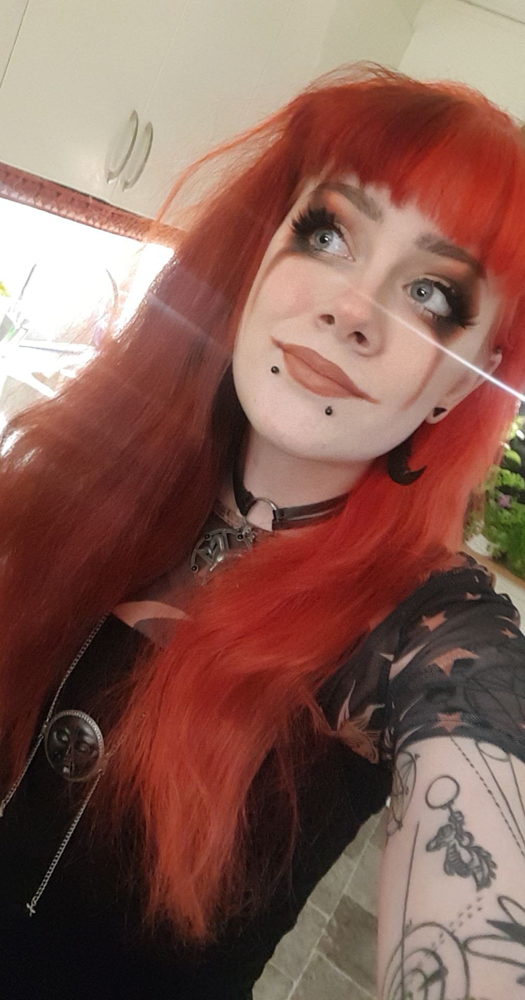
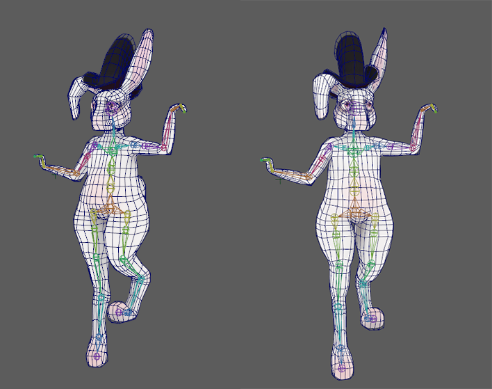

Just me rambling about myself.
 Hello! My name is Nikki Norberg and I am born and raised in a little village in Sweden called Tvååker! I have as long as I remember had a big interest in creating, drawing, and playing video games which showed early in my childhood years. In kindergarten, I was often found drawing or playing with arts and crafts supplies if I was not playing board games with the teachers or my fellow kindergarteners. I was and still am described as a creative and talented girl in the arts and creations department. Much less so in the gymnastics department, I'm afraid.
I remember one particular time in primary school that I was painting on a kind of big canvas, the teacher at the time asked me if she could bring the painting home and also asked me to sign it. "In case you become famous" she explained. It might just have been something kind she as a teacher said to me to spark my light, but later in secondary high school, the same happened again but with several teachers this time. We were asked to choose a modern painter to try and paint a resembling painting in their style. I chose Rozi Demant. I left the painting for them to argue over.
In secondary high school I studied both game development (mostly programming) and game design. Most people I knew did not know what they wanted to work with when they graduated secondary, but I knew exactly what wanted to do for a living from the beginning of the last group project: Shadow Realm.
Shadow Realm is the name of the game me and my group created for our last game creation assignment the last year of secondary high school. Every year students got a game development assignment but the last year was the first time we got to work with 3D game creation. The game is since lost but the game in short was about a boy who accidentally set fire to the local village barn and got executed for doing so. The boy, innocent by heart, was sent to the Shadow Realm where he would be tasked to make his way through the trials awaiting him along the way. Were he to pass, he'd be sent to heaven, however, were he to fail, a much darker fate awaits him. There was a slight problem though. Our dear boy has a debilitating fear of the dark and could not move a single inch, rendering him struck forever in the shadow realm. Were it not for a sudden light finding him in the dark. The light, that seemed to want the boy to follow him, rendered just enough light for the boy to take his first steps. As they travel together, the boy can't help but noticing something familiar about the light. The truth about the light would not be known until the end.
In this game, i got to lead our group through design choises. I for the first time got to create optemized topology that i later got to create a rig for animaion. I got to create 3 levels for our character to travel on as well as all the UV:s and textures. All with questionable results from my now experienced eyes, but this game made me see what I want to spend my life doing: Creating and designing games.
I entered Blekinge tekniska högskola as my first choice for the course of becoming a Technical Artist in August 2019 after a year of working for some financial stability. At this school, I got to learn C++ programming, Python programming, C#, Mel, And so on. Creating scripts in Unity, creating blueprints for materials, and simple game mechanics in Unreal. Creating plugins for Maya from straight on creating game engines using the DirectX 11 library. Then there were the typical game creation aspects of the course, going from creating game prototypes in both Unity and Unreal (And a game in SFML) to creating the Small game and then the Big Game as they are called. (they vary because of the time we are given to create them). Most of the stuff I have created during my university time can be found in the catalog so I do not really need to go into detail, but what I can say is that the creations of all these games, scripts, blueprints, animations, 3D models, textures, and everything in between has been a blast and will continue being a blast as long as I have a functioning computer i can create on.